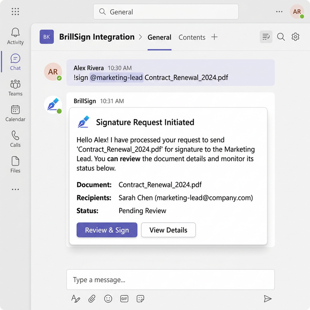
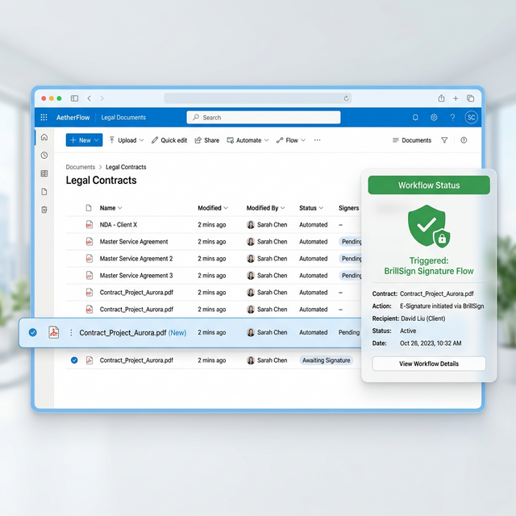
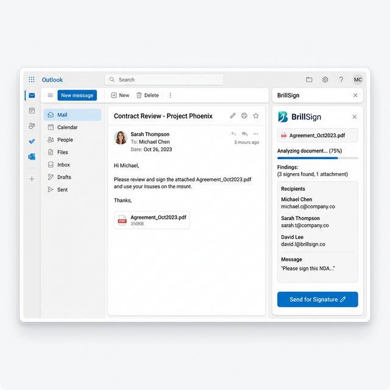

The Signing Layer for Your Microsoft Stack.
BrillSign integrates natively with Teams, SharePoint, and Outlook. A Teams bot that signs documents in chat, SharePoint library triggers, and an Outlook add-in for direct inbox signing — all with zero-knowledge security.
Deep Microsoft Integration.
Enterprise-Grade Trust.
Whether your team works in Teams, SharePoint, or Outlook — BrillSign fits naturally into every corner of the Microsoft 365 ecosystem.
Teams Bot: Sign from Chat
Use the BrillSign Teams bot to initiate signing directly in any Teams channel or chat. Never leave your conversation to start a contract flow.
- Type
/sign @email doc.pdfand press send - Instant status notifications in your channel

SharePoint Library Signing Triggers
Configure SharePoint document libraries to automatically trigger signing workflows when a file is uploaded, moved, or tagged with a specific metadata value.
Signed documents and cryptographic proofs are securely routed back to designated SharePoint folders, entirely automating your record keeping.

Outlook Add-in for Direct Signing
The Outlook add-in allows you to convert email attachments into formal contracts without leaving your inbox. Works across Outlook for Web, Desktop, and Mobile.
Track the real-time signing status of documents directly alongside the email thread associated with the deal.

From Teams Message to Signed Contract in Minutes.
Trigger from Teams, SharePoint, or Outlook
Use the bot command in Teams, a SharePoint trigger, or the Outlook add-in to initiate a signing request.
Signers Sign Anywhere
Signers receive a secure email. They sign on any device without needing a Microsoft or BrillSign account.
Microsoft 365 Auto-Updated
Signed doc saves to SharePoint. Teams bot posts a completion notice. Outlook thread updates with signing status.
Install from the Microsoft AppSource.
Install from AppSource
Search "BrillSign" on Microsoft AppSource. Install as a Teams app, SharePoint add-in, and Outlook add-in in one package.
Grant Azure AD Permissions
An Azure AD admin grants the required API permissions (Files.Read, User.Read). No custom development needed.
Connect BrillSign Account
Sign in to BrillSign from the app's settings. Your Microsoft 365 tenant is now connected.
Configure SharePoint Triggers
In SharePoint Site Settings, configure which libraries trigger signing workflows and define routing rules per document type.
Microsoft 365 Questions
Yes. The BrillSign Teams bot works with all Microsoft Teams plans including Teams Free, Teams Essentials, Microsoft 365 Business, and Enterprise plans. The bot is installed by a Teams admin for the entire org, or individually by users.
Yes. BrillSign provides a Power Automate connector, enabling you to build signing workflows using Microsoft's low-code platform. Trigger from SharePoint, OneDrive, Teams, or any other Power Automate connector. Available in the Power Automate connector gallery.
Azure AD is used for admin-level permission grants. Individual users can authenticate via Microsoft SSO. However, signers (people outside your organization) do not need any Microsoft account — they receive and sign via email link.
Signed documents can be explicitly configured to save back to SharePoint or OneDrive after signing. BrillSign itself only stores cryptographic proofs — never plaintext document content — due to its zero-knowledge architecture.
Ready to Sign from Microsoft 365?
Install from AppSource and go live in under 15 minutes — no code required.